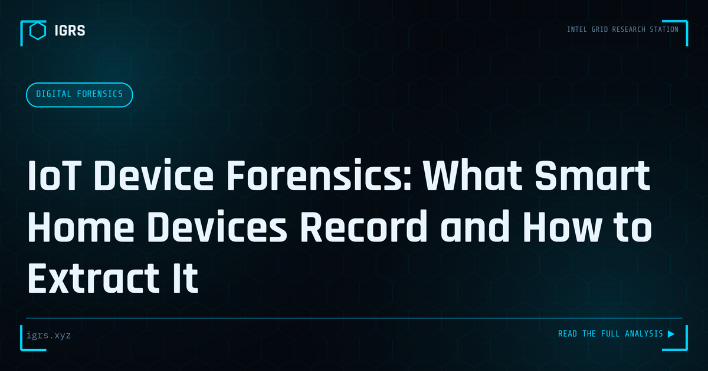

IoT Device Forensics: What Smart Home Devices Record and How to Extract It
| File No. | IGRS-026/2026 |
| Subject | Investigation guide to forensic extraction from IoT devices, smart speakers, and connected devices |
| Category | Digital Forensics |
| Author | Manuj Kumar Pandey |
| Published | 2026-05-08 |
| Reading time | 12 minutes |
Smart speakers, doorbell cameras, fitness trackers, and smart TVs generate rich investigative data. How to extract it, authenticate it, and use it in proceedings.
IoT Device Forensics
The proliferation of Internet of Things (IoT) devices — smart home gadgets, cameras, wearables, and connected appliances — has created a new and rich source of digital evidence. These devices record activity, capture data, and connect to networks, making them valuable in investigations. IoT forensics is the discipline of extracting and analysing evidence from these devices. This guide introduces IoT forensics for Indian investigators.
Why IoT Matters in Investigations
IoT devices are witnesses to activity. A smart speaker may record commands, a security camera captures footage, a wearable logs location and movement, and a connected thermostat reflects presence patterns. Collectively, these devices can establish who was where, when, and doing what — evidence that may not exist anywhere else. As IoT devices fill homes and workplaces, they increasingly hold evidence relevant to investigations of all kinds.
Sources of IoT Evidence
| Source | Evidence |
|---|---|
| The device itself | Local storage, logs, settings |
| Companion app | User data, history, settings |
| Cloud service | Recordings, logs, account data |
| Network traffic | Communication patterns |
The Cloud Dimension
Much IoT data lives not on the device but in the cloud. Smart device recordings, logs, and history are often stored on the manufacturer's servers, accessible through the companion app or the cloud account. This means IoT forensics frequently involves obtaining data from cloud providers under legal authority, in addition to examining the physical device. Understanding where each device stores its data is essential to a complete investigation.
Forensic Challenges
IoT forensics presents distinct challenges. Devices use diverse, often proprietary formats and operating systems, lack standard forensic tools, may store little locally (relying on the cloud), and can be difficult to access without altering data. The variety of devices means no single approach works for all. Investigators must adapt to each device, often combining device examination, app analysis, cloud data requests, and network analysis to build a complete picture.
Legal Framework
IoT forensic investigation in India operates under the established legal framework. Production of data from device manufacturers and cloud providers is obtained under Section 94 BNSS, and electronic evidence must be certified under Section 63 BSA to be admissible. Because IoT devices capture personal data — sometimes intimate details of private life — investigators must also respect privacy and proportionality, ensuring data collection is lawful and justified by the investigation.
Investigative Methodology
A sound IoT investigation identifies the relevant devices, determines where each stores data (locally, in apps, in the cloud), preserves evidence properly from each source, and correlates findings across devices and with other evidence. The companion app often provides the most accessible data, while cloud requests yield recordings and history. Correlating IoT evidence with other digital and physical evidence strengthens the overall case.
An Emerging Discipline
For Indian investigators, IoT forensics is an emerging and increasingly important discipline as connected devices become ubiquitous. While it presents challenges — diverse formats, cloud dependence, and limited standard tooling — IoT devices offer evidence available nowhere else, capable of establishing presence, activity, and timelines with precision. Developing IoT forensic capability, grounded in the proper legal framework and a methodical approach across device, app, cloud, and network, positions investigators to harness this rich and growing source of digital evidence in the investigations of today and tomorrow.